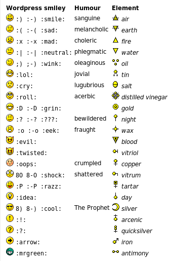

Sunday, November the 30th, 2008
back to: title, date or indexes
Diligent readers of the Comments will know that the other day I got into a bit of a flap when someone had the temerity to include one of those godawful smiley faces to accompany her observations on the “Prophet” Mohammed cartoon. Indeed, so grumpy did I become that I could only becalm myself by mooing like a cow, which I am given to understand is a proven relaxation technique peddled by stress counsellors. I mooed the afternoon away, and so intensely did I immerse myself in cowdom that, at dusk, I found myself standing in a field, staring blankly at nothing, while gnats and midges hovered in the air around me.
While I was thus engaged, Antipodean Hooting Yard researcher Glyn Webster made better use of his time. He has devised an extremely helpful Table Of Non-Blötzmann Smileys which is reproduced below. Mr Webster has suggested that it may be possible for a boffin to tinker with the WordPress software to make these the default symbols for Hooting Yard and, while I do not encourage the use of them at all, this is well worth looking into.
